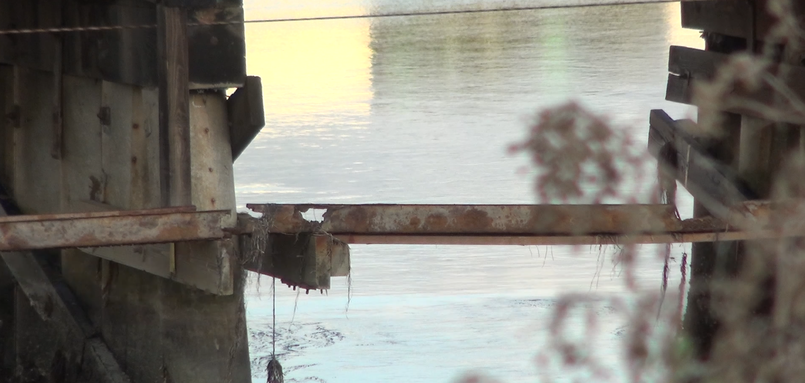

Written by: Rourke Blignaut
Date written: 1/19/25
You’ve probably heard about the LA fires destroying neighborhoods and even whole towns. And since San Diego is in a drought, we have a huge risk for a fire. This december was the 3rd driest december for the past 130 and over 3,000,000 San Diegans are affected. Here are some ways to be prepared for a fire. According to Ready.gov, you should have an escape plan, such as a route to escape your house if some doorways are blocked off. And the CBC says you should make an emergency kit. This could include medical equipment, a flashlight, water, food, and much more. We don't know when a fire will break out but it is very important to be prepared for one.